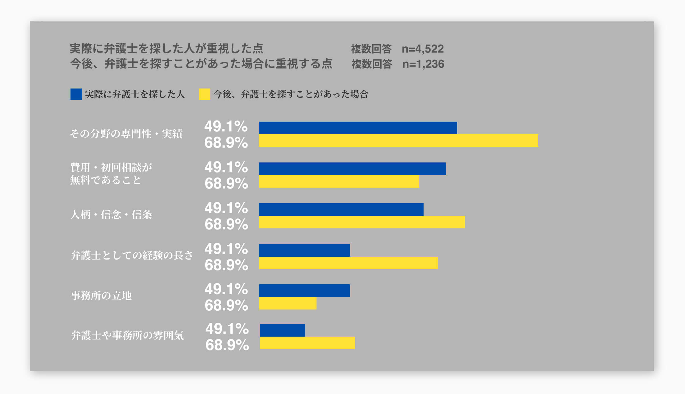
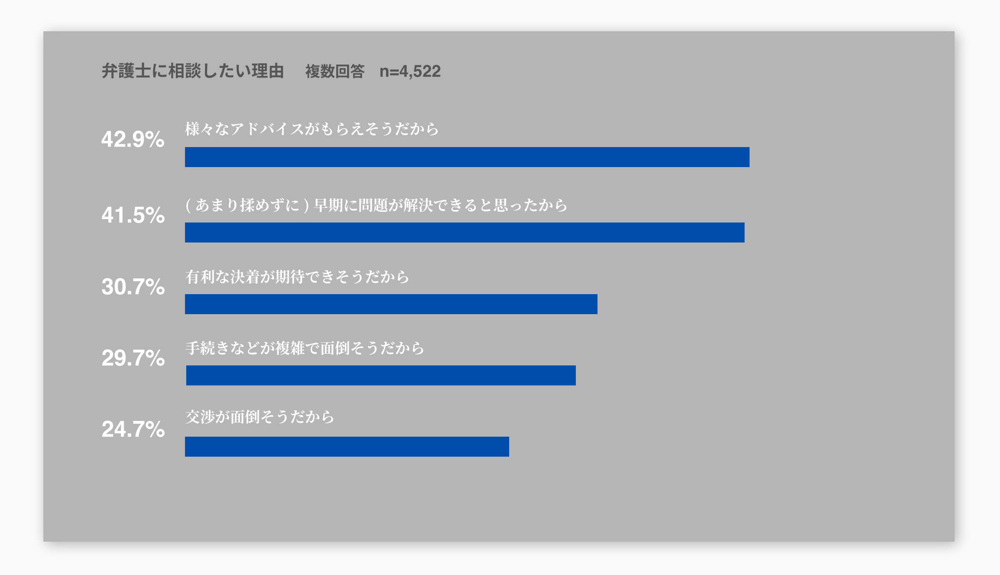
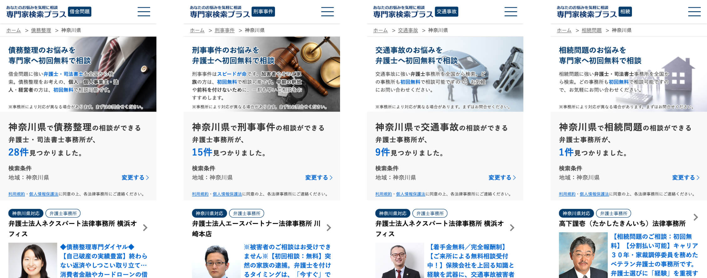
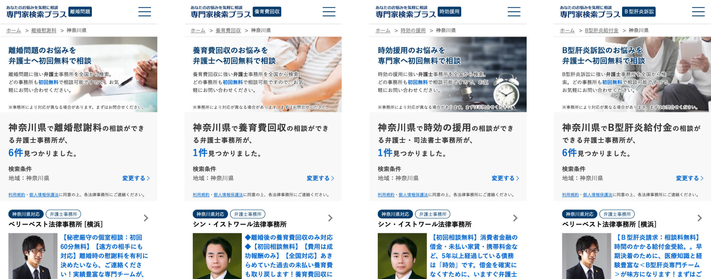
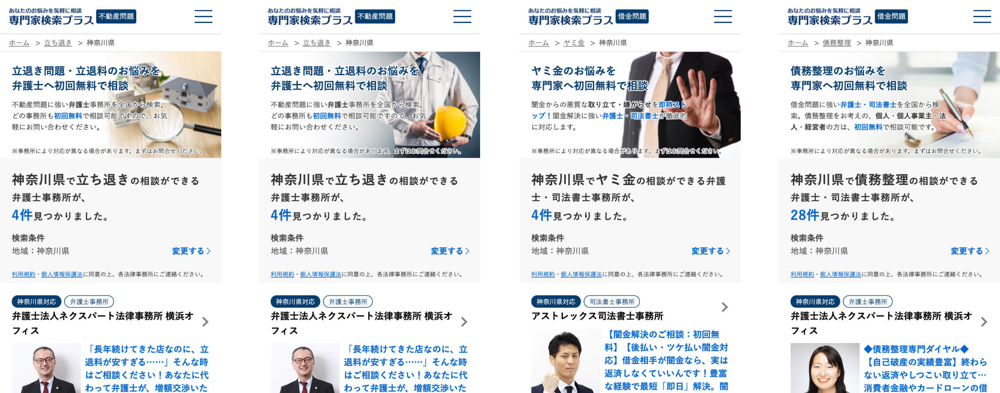
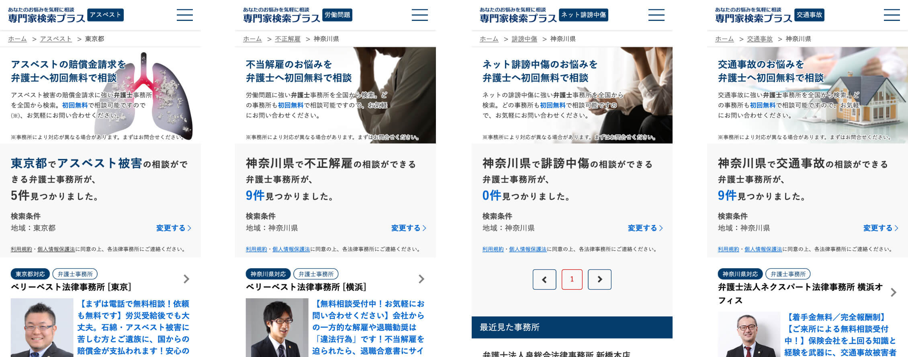
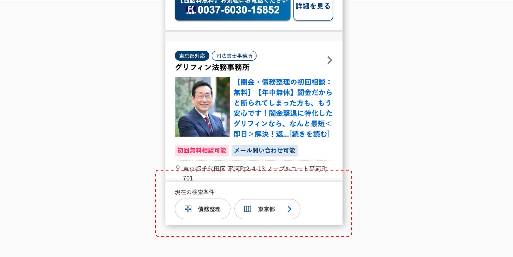
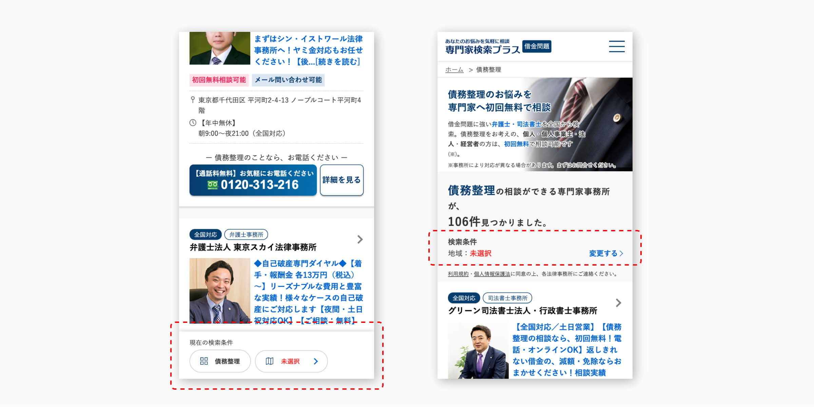

専門家検索プラス
専門家検索プラスは、全国の弁護士や司法書士などいわゆる「士業」の専門家と、法的な悩みを抱えた人々をつなぐオンラインマッチングサービスです。
ユーザー側の特徴は、初回の相談料が無料なので気軽に専門家へコンタクトが取れること、クライアント側の特徴は、当サイトから発生する相談者からの問い合わせのうち、受任に繋がりにくい内容のものが少ないことと、欲しい案件をピンポイントで取りにいけることです（例えば「刑事事件」の中でも特に「冤罪」の案件が欲しいといった要望に応えられる）。
それらの特徴を実現するために、ユーザーからの問い合わせ発生率（以下、コンバージョン率）を上げること、その上でクライアントにとって嬉しくない内容の問い合わせが発生しないようにユーザーをコントロールすることが、このプロジェクトにおけるデザインチームのミッションでした。
私はプロジェクトのリーダーを務め、全体の情報設計とサービスサイトの制作、改善を牽引しました。
- 担当
- UX/UI デザイン, フロント実装, PM
当サイトの主要なページ構成は、トップページ、一覧ページ、詳細ページの三つです。ユーザーの仕入れは主に検索広告で行うため、ユーザーは条件が絞り込まれた状態の一覧ページに降りてきます。検索クエリは「労働問題 弁護士 相談 （東京）」など。
課題
サービスの特徴を実現するために、クリアしなければいけない課題は以下の３つでした。
- ・課題1: コンバージョン率を高い水準に上げる（水準を上げ続ける）
- ・課題2: 問い合わせが発生しにくい分野のコンバージョン率を上げる
- ・課題3: 内容の悪い（クライアントにとって嬉しくない）問い合わせが発生しないようにする
課題を解決すべく行ったさまざまな施策のうちのいくつかを抜粋して紹介します。
ユーザーリサーチ
-課題1: コンバージョン率を高い水準に上げる-
まずは問い合わせの発生数を増やすことが何よりも重要であるため、課題1にアプローチすべく「法的な悩みを抱えているユーザー心理の理解」に努めました。
- 
- 
法的トラブルに関するアンケート調査の結果から、問い合わせの数を増やすための施策を打つために、デザインでのアプローチが可能かつ、回答率が上位であった以下の２点のユーザー心理に着目しました。
- ・費用・初回相談が無料であること（弁護士を探した人が重視した点）
- ・様々なアドバイスがもらえそうだから（弁護士に相談したい理由）
「悩みを相談したいユーザー」へのアプローチ
-課題1: コンバージョン率を高い水準に上げる-
法律相談の分野によってユーザーの特徴は大きく異なりますが、まずは「悩みを相談したい」という共通の特徴を持ったユーザーへのアプローチとしての施策を考えました。
アンケート調査の結果を踏まえ、サービスの根幹となる「初回相談は無料だから、まずは気軽に問い合わせをしてみる」というUXを実現するところから、画面のデザインを行いました。
初回相談無料のアピール
デザインの方針として、この「初回無料相談可能」が最も目立つ要素となるように配色しました。
全体の色は信頼感のある青系で統一し、赤系の色は重要な要素でのみ使用可能なものに制限しました。ボタンの形状や余白のサイズなども同様に、一貫性を持たせるためのガイドラインを制作しました。
事務所の選び方
初回相談が無料であることを認識させられたとして、次にユーザーはどの事務所を選べば良いのかがわからないことが、コンバージョンを阻害している要因であると仮定しました。そこで、気軽に問い合わせをしてもらうための施策として、「事務所の選び方」というコンテンツを一覧ページに追加しました。これを見たユーザーが「じゃあ問い合わせてみよう」となるような内容にすることで、アクションを促すようにしました。
この施策では、サイト上での比較も大事ではあるが、「まずは問い合わせをして、依頼する事務所はそれから選ぶ」というUXを伝えることを目的に実施しました。
こちらのコンテンツをクリックしたユーザーのコンバージョン率は約70%にまで上り、問い合わせ数の増加に成功した施策となりました。
「法律相談の各分野のユーザー」へのアプローチ
-課題2: 問い合わせが発生しにくい分野のCVR改善-
ユーザーの特徴として、「法的な悩みを抱えている」といった点においては共通しているのですが、例えば「刑事事件」の相談がしたいユーザーと、「離婚問題」の相談がしたいユーザーとではその特徴は異なっており、CVRを追求していくには各分野毎のユーザーに対するアプローチが必要でした。
緊急性のない分野では緊急性のある分野よりもユーザーをコンバージョンさせることは難しく、そのような特徴のあるユーザーに対してどのようなアプローチが可能かを考えました。
また、クライアントのニーズに応えることや、各分野毎の売り上げを底上げするためにも重要な課題でした。
ファーストビュー
この課題をクリアするために必要なことを考えると、ユーザーの抱えている法的な悩みに対して、「こういった理由で専門家にいますぐ相談するべきだ」と訴求することだという仮説を立てました。
そこで、まずはユーザーが初めに目にするファーストビューの形を追求しました。より「自分の悩みが解決できる」と思わせるために、各分野毎のイメージ、そしてキャッチコピーやメッセージを分野毎に変更できるようにしました。
- 
- 
- 
- 
こちらは運用上の効率化を図るために仕組みを工夫しました。「借金問題」という大カテゴリーに対してイメージやテキストをデータベースに登録しておけば、登録のない小カテゴリーにはそちらが反映されます。登録がある小カテゴリーはそちらの表示を優先するようにすることで、さらに細かい分野への追及ができるように設計しました。
分野別QA
さらに、特定の分野の悩みを抱えたユーザーに「じゃあ問い合わせしてみよう」と思わせる施策として、各分野毎のQAを表示できる仕組みを考えました。
 スクロールすると表示
スクロールすると表示
こちらも運用上の効率化を図るため、上記のファーストビューと同様の仕組みで設計しました。
問い合わせの質のコントロール
-課題3: クライアントが喜ばない問い合わせが発生しないようにする-
サイトに訪問したユーザーのうちどれだけ多くの割合で問い合わせを発生させられるかに尽力してきましたが、その弊害として、クライアントにとって嬉しくない問い合わせも増えてしまいます。
ターゲットユーザーはコンバージョンさせつつ、それ以外は排除することがクライアントハッピーのために重要な課題でした。
排除文
各クライアント毎の「こういった問い合わせはいらない」といった要望にそれぞれ応えるために、データベースに登録がある場合は表示するといったアラートのメッセージ（排除文）の仕組みを提案しました。
この施策により、今までは入ってしまっていた嬉しくない問い合わせを、それぞれのクライアントに対して最適化することに成功しました。
フッター固定
クライアントの対応エリア外からの問い合わせや、サイトを回遊しているうちに違った絞り込み条件での問い合わせが発生することを防ぐため、画面下部に現在の検索条件を常に表示するようにしました。
- 
- 
また、エリア未選択時にはエラー扱いとして、「未選択」の文字を目立たせるように赤色を使用しました。
診断コンテンツ
ユーザーの総数を増やすために、検索広告でも幅広く取りに行く設定や、ディスプレイ広告の設定も行いたいという要望がマーケティングチームからありました。これらの設定による流入は、コンバージョンしないユーザーが多く含まれてしまうため、デザインチームは問い合わせの質を担保する施策を考える必要がありました。
そこで対策として、本サービスサイトに降りる前段階として、診断コンテンツのページを作成し、クライアントにとって嬉しくないユーザーはこの段階で排除する、といった施策の提案を行いました。
この施策により、クライアントが喜ばない問い合わせを発生させることなく、マーケティングチームが今まで取りに行けていなかった領域のユーザーを多く流入させることに成功しました。
まとめ
-これから-
まだまだ紹介していない施策があるのと同時に、やってみて上手くいかなかった施策もたくさんありました。
デザインチームのミッションとしてはもう一つ、「開発-リリース-改善のサイクルを短期間で繰り返していく」ということも掲げていました。サービスの強みをより強化していくためにはまだまだできていない施策があるはずです。今回は改善や対策を繰り返してきた現状のデザインと、そのいくつかの工程を紹介させていただきました。